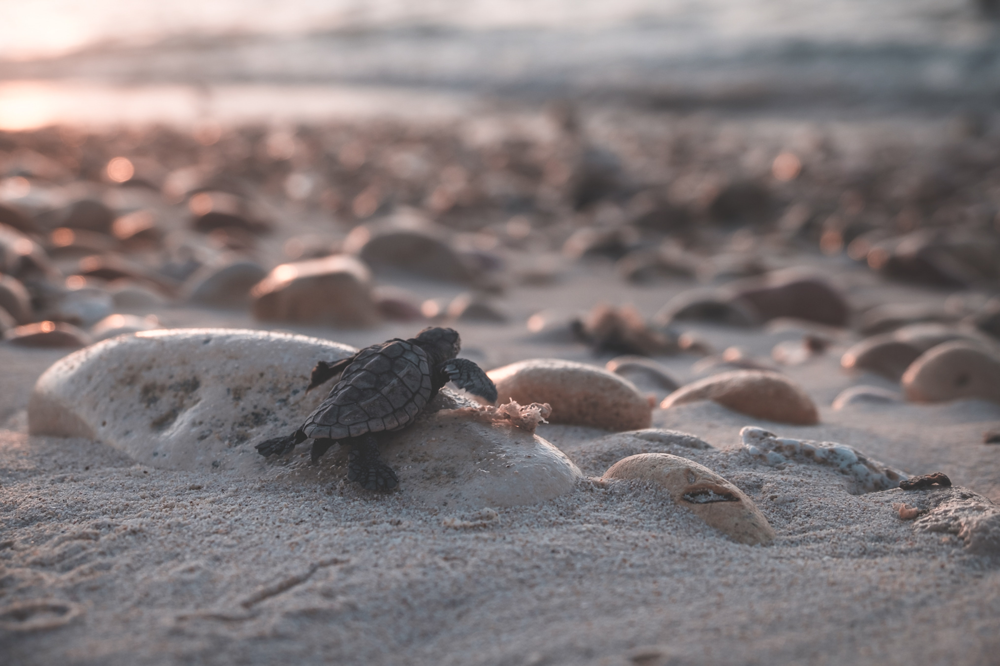
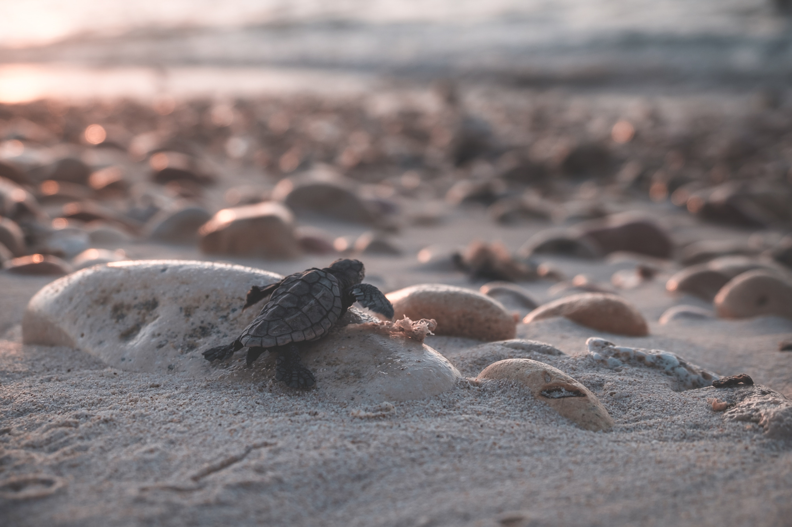

Situated a few kilometres north of the main Hikkaduwa town lies the Sea Turtle Hatchery and Rescue Centre,a centre with the aim of conserving some of the endangered species of turtles in the world. It is just one of many turtle hatcheries in the southern coast of the island. Initially starting as a community project to help protect the biodiversity of the southern coast, it is now a fully-fledged hatchery and rescue centre with dedicated teams that work round the clock to study, care and protect several turtle species.Presently, there are five species of turtles that are taken care of in the hatchery and rescue centre. Such species are the Olive Ridley Turtle, Leatherback Turtle, Loggerhead Turtle, Hawksbill Turtle, and Green Turtle. The facilities of the sea turtle hatchery and rescue centre are all state-of-the-art, complete with water tanks to care for newborn turtles, along with adult turtle species that have been rescued from the sea due to injuries. One of the more peculiar sights in the centre is the area in which the turtles lay their eggs, as they have distinct little mounds of sand piled neatly between one another. Each of these mounds is monitored closely to calculate the hatching process of the turtle eggs.
Ever since the 1960s, the beach town of Hikkaduwa has been a major tourist hotspot, mainly because of the pristine Hikkaduwa Beach. Known for its palm-fringed landscape with alluring waters, the beach is perfect for any traveller looking for recreation, leisure, rest, and relaxation. Many water sports entice the adrenaline junkie with snorkelling, diving, surfing, and many more. If you are looking for a more low-key vacation, the beach is perfect for the entire family to have a picnic, frolic in its waters, or play a bit of beach volleyball. Hikkaduwa Beach is a stretch of endless fun.
Although not known for its ancient historical significance, the Japanese built Tsunami Honganji Viharaya is a sombre reminder of the tsunami that devastated the coastal belt of the island in 2004. Built in the year 2006, the place of worship is a peaceful one and reflects a more East Asian design, as opposed to the ancient local temples. The highlight of the temple is the tall statue of the Lord Buddha that dominates the skyline of the area. Standing at 30 metres, it is one of the largest statues on the island.
Located further down south from the main town of Hikkaduwa, the Ratgama Lake is a welcoming sight to many as it provides a more rustic landscape, as opposed to Hikkaduwa’s typical beach surroundings. The natural lake is known for its unique biodiversity, as it is home to some interesting species of flora and fauna. Birds are one such species of fauna that take refuge in the banks of this lake due to its greenery and untouched nature. The lake stretches out more than 17 kilometres, making it one of the larger natural lakes in the southern coast of the island. Moreover, this also allows many to engage in some scenic boat tours, which provide a different picture of Hikkaduwa.